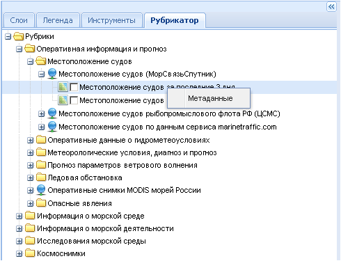
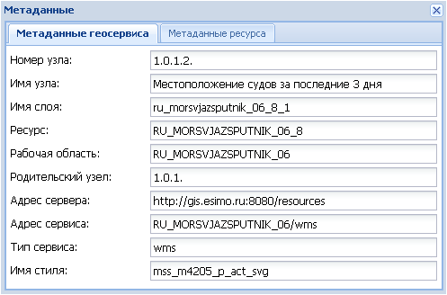
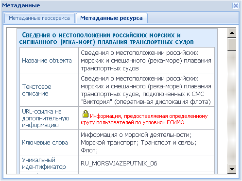

Рубрикатор
Закладка Рубрикатор служит для поиска необходимых для добавления слоев в структурированном тематическом каталоге пространственных ресурсов ЕСИМО. Рубрикатор представлен в виде иерархически построенного каталога, объединяющего данные в группы, подгруппы и т.д.

Для добавления слоя пользователь должен раскрыть нужные тематические рубрики до уровня слоев и отметить галочкой слои, необходимые для работы. Они появятся в рабочем окне и в списке слоев на боковой панели задач.
Слои, представленные в рубрикаторе, имеют контекстное меню. При нажатии правой кнопкой мыши на названии слоя раскрывается контекстное меню с опцией Метаданные.

После ее активации появится дополнительное окно Метаданные, имеющее две закладки - Метаданные геосервиса и Метаданные ресурса.

